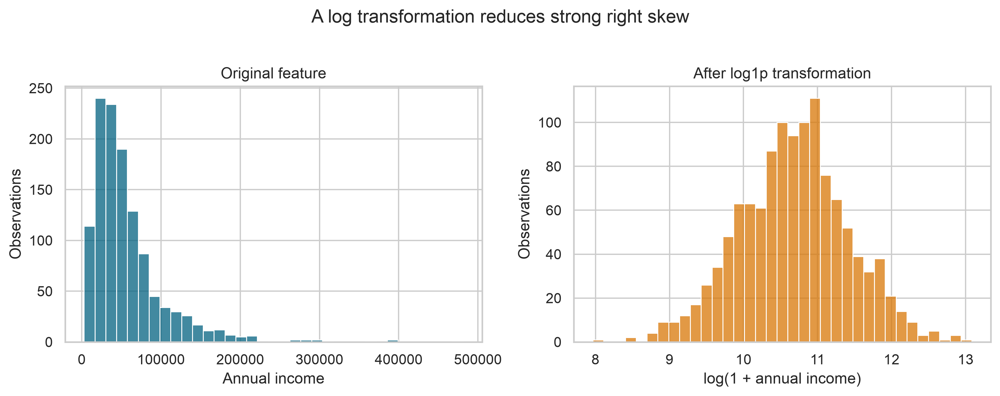
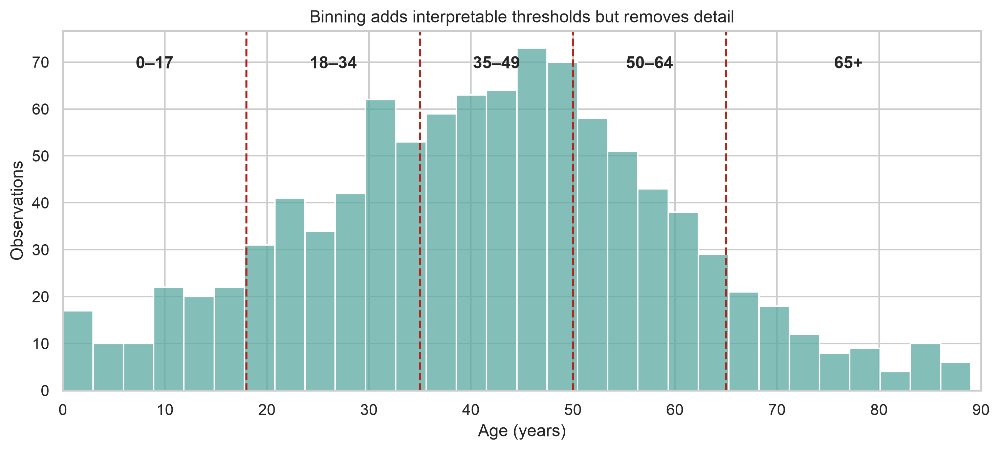
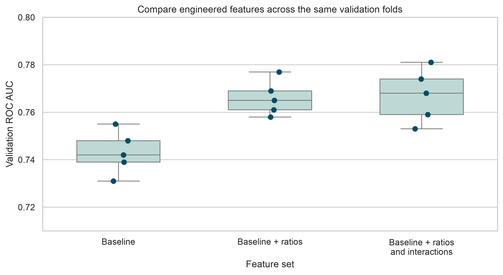

Feature Engineering
Feature engineering turns raw variables into representations that make the structure of a modelling problem easier to learn. It combines domain knowledge, data understanding, and careful preprocessing.
The goal is not to create as many columns as possible. The goal is to create features that are meaningful, reproducible, available when predictions are made, and appropriate for the model being used.
Learning objectives
By the end of this chapter, you should be able to:
- distinguish feature engineering from data cleaning;
- identify and prevent target leakage;
- create numeric, categorical, date, and interaction features;
- place learned transformations inside a scikit-learn pipeline;
- evaluate whether engineered features improve validation performance; and
- document feature definitions so that they can be reproduced.
From cleaned data to model-ready features
Data cleaning corrects problems such as invalid values, inconsistent labels, and duplicate records. Feature engineering changes how valid information is represented for modelling.
For example, a cleaned dataset may contain annual_income and household_size. A model may benefit from an additional feature:
[ = ]
This derived feature may express household resources more directly than either input variable alone.
Useful features generally satisfy four conditions:
- Relevant — connected to the outcome through a plausible mechanism.
- Available — known at the moment a prediction must be made.
- Stable — defined consistently across training and future data.
- Testable — evaluated using data that did not determine the transformation.
Define the prediction point first
Before creating features, state when the prediction will be made. This defines which information is legitimately available.
Suppose the goal is to predict whether a patient will be readmitted using information available at hospital discharge. Age, diagnosis, length of stay, and discharge status may be valid inputs. A follow-up visit recorded two weeks later is not valid because it occurs after the prediction point.
This distinction prevents target leakage: the use of information that would not be available in the real prediction setting or that reveals the outcome directly.
Common leakage sources include:
- variables recorded after the outcome occurs;
- aggregates computed using the full dataset;
- imputing, scaling, or selecting features before splitting the data;
- repeated observations from the same person appearing in both training and validation data; and
- identifiers or administrative fields that indirectly encode the target.
A feature may be strongly associated with the target and still be invalid. Always ask: Would this value be known for a new case at prediction time?
Split before learning transformations
Rules based only on domain knowledge can be defined before splitting. Any rule that learns from observed values must be fitted using training data only.
from sklearn.model_selection import train_test_split
X = data.drop(columns="target")
y = data["target"]
X_train, X_test, y_train, y_test = train_test_split(
X,
y,
test_size=0.20,
stratify=y,
random_state=42,
)The test set should remain untouched until the workflow and modelling choices have been finalized. During development, compare alternatives using cross-validation on the training set.
If observations are grouped or ordered in time, a random split may be inappropriate. Use a group-aware or time-aware split that reflects how the model will encounter future data.
Numeric feature engineering
Ratios and rates
Ratios can express scale-adjusted relationships, but the denominator requires careful handling.
import numpy as np
features = data.copy()
features["income_per_person"] = np.where(
features["household_size"] > 0,
features["annual_income"] / features["household_size"],
np.nan,
)Do not silently replace an undefined ratio with zero. Zero is a meaningful value and may misrepresent missing or invalid information.
Logarithmic transformations
Variables such as income, transaction value, or biomarker concentration may be strongly right-skewed. A logarithmic transformation can reduce the influence of very large values and make multiplicative differences easier to model.
features["log_annual_income"] = np.log1p(features["annual_income"])np.log1p(x) calculates ((1+x)), which permits zero values. It still requires values greater than or equal to zero.
The same feature can look very different after transformation. The original values below have a long right tail, while the transformed values are more evenly distributed.

The figure is generated by scripts/python/03-generate_feature_engineering_figures.py.
Binning
Binning can create interpretable groups, especially when meaningful thresholds come from domain knowledge.
import pandas as pd
features["age_group"] = pd.cut(
features["age"],
bins=[0, 18, 35, 50, 65, np.inf],
labels=["0-17", "18-34", "35-49", "50-64", "65+"],
right=False,
)Binning also discards within-group variation. Retain the original continuous variable unless there is a clear reason not to, and compare both versions.

The boundaries make the groups easy to interpret, but two people on opposite sides of a boundary may be more similar than their category labels suggest.
Categorical feature engineering
Most estimators require categorical variables to be represented numerically. One-hot encoding creates an indicator column for each observed category.
from sklearn.preprocessing import OneHotEncoder
encoder = OneHotEncoder(
handle_unknown="ignore",
sparse_output=False,
)handle_unknown="ignore" allows the fitted encoder to process categories that appear in new data but were absent from the training set. For high-cardinality variables, one-hot encoding may create too many sparse columns. Consider:
- combining genuinely rare levels into an
Othercategory; - representing a category using defensible domain groupings;
- using a model that handles categorical predictors directly; or
- applying a supervised encoder within cross-validation.
Target encoding must never be computed once on the full training dataset and then evaluated on those same encoded rows. It should be learned within each training fold to avoid leaking target information into validation folds.
Date and time features
Dates often contain several useful components.
features["event_date"] = pd.to_datetime(
features["event_date"],
errors="coerce",
)
features["event_year"] = features["event_date"].dt.year
features["event_month"] = features["event_date"].dt.month
features["event_day_of_week"] = features["event_date"].dt.dayofweek
features["event_is_weekend"] = (
features["event_day_of_week"] >= 5
).astype("int8")Elapsed time may be more informative than separate calendar components.
reference_date = pd.Timestamp("2026-08-01")
features["days_since_event"] = (
reference_date - features["event_date"]
).dt.daysIn a production workflow, the reference date must be defined from the prediction context rather than hard-coded accidentally. Never calculate elapsed time from a future date unavailable at prediction time.
Interaction features
An interaction represents a relationship in which the effect of one feature depends on another.
features["dose_per_kg"] = np.where(
features["weight_kg"] > 0,
features["dose_mg"] / features["weight_kg"],
np.nan,
)Polynomial and interaction terms can also be generated systematically.
from sklearn.preprocessing import PolynomialFeatures
interaction_builder = PolynomialFeatures(
degree=2,
interaction_only=True,
include_bias=False,
)Systematic expansion can increase dimensionality quickly. Use it with regularization, cross-validation, and a clear modelling rationale.
Put preprocessing inside a pipeline
A pipeline ensures that imputers, scalers, encoders, and the model are fitted in the correct order. During cross-validation, scikit-learn learns each transformation using only the training fold.
from sklearn.compose import ColumnTransformer
from sklearn.impute import SimpleImputer
from sklearn.linear_model import LogisticRegression
from sklearn.pipeline import Pipeline
from sklearn.preprocessing import OneHotEncoder, StandardScaler
numeric_features = [
"age",
"annual_income",
"household_size",
]
categorical_features = ["region", "employment_type"]
numeric_pipeline = Pipeline(
steps=[
("imputer", SimpleImputer(strategy="median")),
("scaler", StandardScaler()),
]
)
categorical_pipeline = Pipeline(
steps=[
("imputer", SimpleImputer(strategy="most_frequent")),
(
"encoder",
OneHotEncoder(handle_unknown="ignore"),
),
]
)
preprocessor = ColumnTransformer(
transformers=[
("numeric", numeric_pipeline, numeric_features),
("categorical", categorical_pipeline, categorical_features),
],
remainder="drop",
)
model_pipeline = Pipeline(
steps=[
("preprocessor", preprocessor),
(
"model",
LogisticRegression(max_iter=1_000, random_state=42),
),
]
)Fit the complete pipeline, not its preprocessing steps separately.
model_pipeline.fit(X_train, y_train)
predictions = model_pipeline.predict(X_test)Standardization is often important for distance-based models, support vector machines, neural networks, and regularized linear models. Tree-based models generally do not require numeric scaling. The preprocessing design should match the estimator.
Add custom domain features safely
When a domain transformation must operate inside a pipeline, place it in a reusable function and wrap it with FunctionTransformer.
from sklearn.preprocessing import FunctionTransformer
def add_domain_features(frame):
transformed = frame.copy()
transformed["income_per_person"] = np.where(
transformed["household_size"] > 0,
transformed["annual_income"]
/ transformed["household_size"],
np.nan,
)
return transformed
feature_builder = FunctionTransformer(
add_domain_features,
validate=False,
)The feature builder can become the first step of the full pipeline. Keeping the logic in one place prevents training and prediction workflows from implementing different feature definitions.
Evaluate feature value with cross-validation
An engineered feature is useful only if it improves the workflow on appropriate validation data or provides a justified benefit such as interpretability or fairness.
from sklearn.model_selection import StratifiedKFold, cross_validate
cv = StratifiedKFold(
n_splits=5,
shuffle=True,
random_state=42,
)
scores = cross_validate(
model_pipeline,
X_train,
y_train,
cv=cv,
scoring=["roc_auc", "accuracy"],
return_train_score=False,
)
print(scores["test_roc_auc"].mean())
print(scores["test_accuracy"].mean())Compare a defensible baseline with one change at a time:
- fit the baseline feature set;
- add or revise a feature group;
- evaluate both workflows using the same folds and metrics;
- inspect variation across folds, not only the mean score; and
- retain the change only when the benefit is credible and relevant.
Feature engineering is an iterative modelling decision, not a one-time data preparation step.

The points represent the individual folds. In this illustrative result, ratio features improve performance consistently, while adding interactions provides no equally clear improvement. The scores are demonstration values, not results from a fitted study model.
Generate the chapter figures
From the repository root, choose either of the following alternatives.
Option 1 — use the chapter-specific Bash helper:
bash scripts/bash/03-generate_feature_engineering_figures.shOption 2 — run the plotting script directly:
.venv/bin/python scripts/python/03-generate_feature_engineering_figures.pyBoth commands generate the same three figures under results/figures/. The Bash helper calls the Python script using the repository-specific .venv, so run either command, not both. These ordinary bash blocks are displayed for learners to copy; Quarto does not execute them while rendering the chapter.
The plotting code remains copyable but is not executed when Quarto renders the chapter:
import seaborn as sns
sns.boxplot(
data=validation_scores,
x="feature_set",
y="roc_auc",
color="#b8ded9",
showfliers=False,
)
sns.stripplot(
data=validation_scores,
x="feature_set",
y="roc_auc",
color="#024d66",
jitter=0.08,
)Feature selection is part of the pipeline
More features do not necessarily improve generalization. Redundant, unstable, or noisy predictors can increase computation and make interpretation harder.
Feature selection approaches include:
- filter methods, such as variance or univariate association thresholds;
- wrapper methods, such as recursive feature elimination; and
- embedded methods, such as L1 regularization or tree-based importance.
Any supervised selection method must be fitted within each cross-validation fold. Selecting features once using the complete dataset leaks validation information into the model-building process.
Model-derived importance is also not proof that a feature is causal. Importance describes how a fitted model used the available predictors under a particular dataset and modelling specification.
Document the feature set
A feature dictionary makes engineered data auditable and easier to reproduce.
| Feature | Source variables | Definition | Availability | Notes |
|---|---|---|---|---|
income_per_person |
annual_income, household_size |
Income divided by household size | Prediction time | Missing when household size is not positive |
event_is_weekend |
event_date |
1 for Saturday or Sunday; otherwise 0 | Prediction time | Date parsed before extraction |
dose_per_kg |
dose_mg, weight_kg |
Dose divided by body weight | Prediction time | Units must be verified |
For each feature, record:
- its exact formula or transformation;
- source columns and units;
- missing-value behavior;
- valid range and category definitions;
- the prediction-time availability rule; and
- the code version that created it.
Practical workflow
Use the following sequence when engineering features:
- define the target, unit of observation, and prediction point;
- identify information available at that point;
- split the data using a strategy appropriate to the problem;
- build a simple baseline with minimal preprocessing;
- propose features from domain knowledge and exploratory evidence;
- implement learned transformations inside a pipeline;
- compare alternatives using consistent cross-validation;
- examine errors, stability, and subgroup performance; and
- document and version the final feature definitions.
Common mistakes
Avoid these recurring problems:
- engineering features before defining the prediction setting;
- computing medians, category frequencies, or target encodings on all data;
- using future information in historical records;
- treating identifiers as ordinary numeric predictors;
- creating ratios without checking zero values and units;
- expanding interactions without controlling dimensionality;
- evaluating many alternatives against the test set; and
- assuming a feature is useful because it has a plausible name.
Knowledge check
- Why should imputation and scaling be fitted inside cross-validation?
- When can a highly predictive variable still be invalid?
- Why might a ratio be more informative than its two source variables?
- What risk is introduced by target encoding?
- Why should engineered features be compared against a baseline using the same validation folds?
Chapter summary
Feature engineering connects domain knowledge with statistical learning. Strong features are available at prediction time, defined consistently, and evaluated without leakage. Pipelines make learned transformations reproducible and keep them within the correct training boundaries. The best feature set is not the largest one; it is the smallest defensible representation that improves the modelling objective on unseen data.
The next chapter builds on this model-ready representation by examining how to choose and evaluate predictive models systematically.